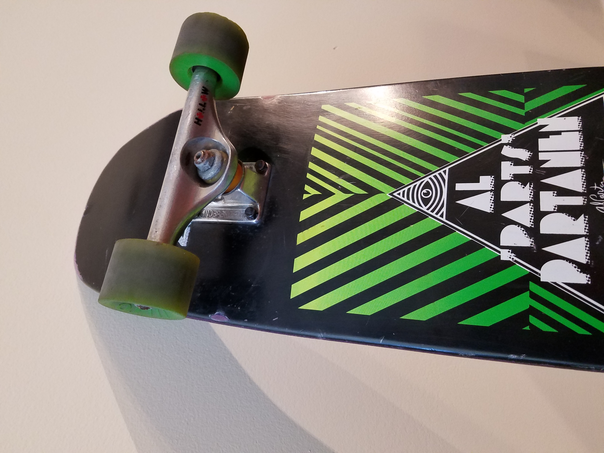
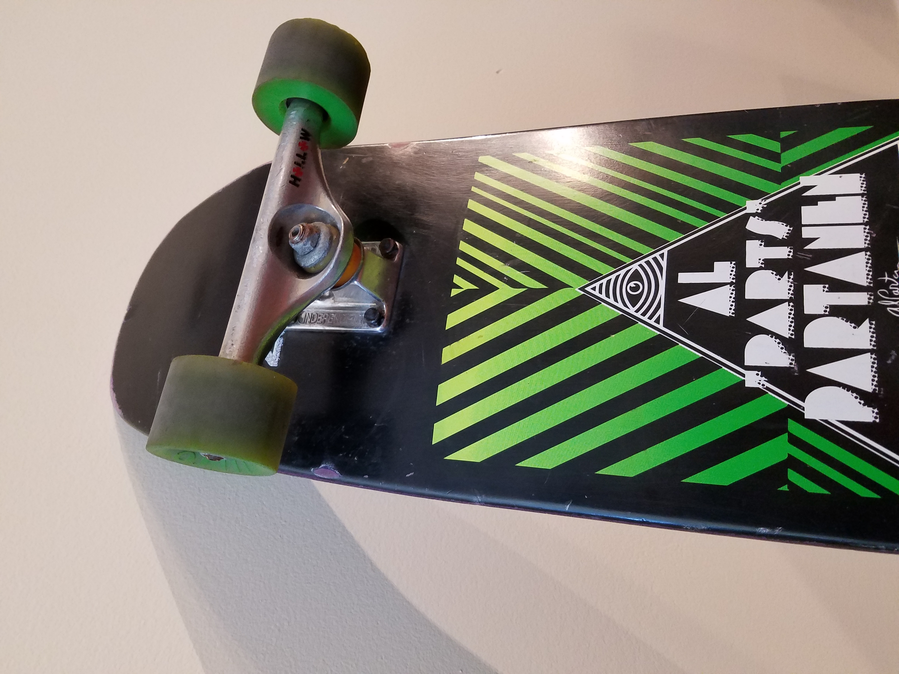
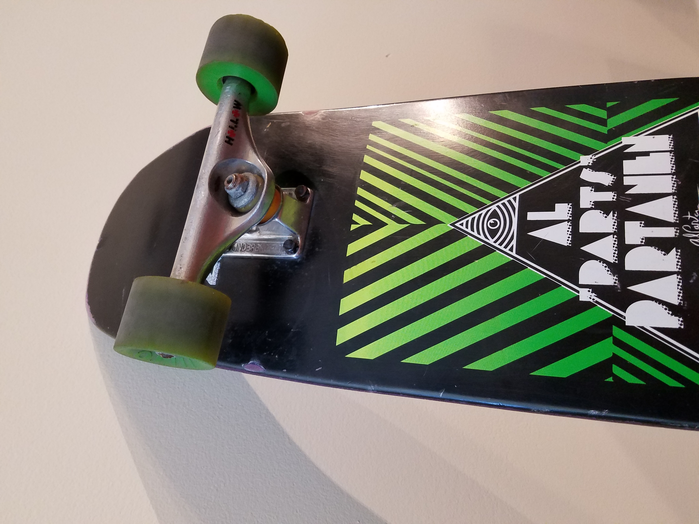

Skate Pedia is your first stop on learning everything skateboarding. Whether you want to build your own board or learn how to ride, we can provide you with all the help you will need.

Building a Complete
The first step to building a complete skateboard is acquiring all of the parts and the correct tools. For parts you will need: skateboard deck, grip tape, wheels, bearings, trucks and hardware. For tools you will need: skate tool (designed for building skateboards, can be found at local skate shop or Zumiez), screwdriver and razor blade.
Peel the grip tape from the paper it is on and apply it as smoothly as possible on the top of the deck. Use the screwdriver or a filer, if handy, and rub the edges of the grip tape so it makes it easier to cut. Then grab the razor blade (adult supervision required) and cut along the edges as even as possible.
Take the bearings and put all 8 on either sides of the wheels. Make sure they are in there good but not too snug in case you need to remove then in the future.
Place the wheels onto the trucks and screw the nut on the outside to keep the wheels in place. Do not tighten too much or else the wheels will not spin.
Place the screws in all 8 of the holes through the top of the board and place the trucks, facing the right way (displayed in picture above), through the screws.
Use the screwdriver and the skate tool to tighten the smaller nuts onto the screws to lock the trucks in place.
Lastly, and most importantly, take it out for a ride and have fun!
How to Ollie
Get comfortable riding your board and staying balanced before attempting.
Jump up and down on the board to get used to landing.
First place both feet on the board stationary, one on the back tail and one towards the middle.
Here’s the hard part, all in one motion you must pop your back foot down on the tail, slide your front foot up using the top of your shoe to catch the grip tape, and jump.
Keep practicing this motion until you get it down, remember, practice makes perfect!

 
